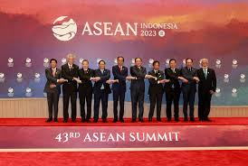
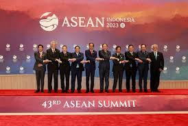

GALERI
 


SELAMAT DATANG!
Haloo, Sanurians! Perkenalkan saya Gracia Jeconia Putri Maha dari kelas IX-2/14 sebagai penulis website ini. Selamat datang di Website Kerja Sama Internasional! Dalam memenuhi tugas kolaborasi IL kecil yang terdiri dari mata pelajaran TIK, IPS dan PPKn, saya membuat website dengan tema Kerja Sama Internasional. Kerja Sama Internasional itu apa sih? Kerja Sama Internasional adalah hubungan kerja sama yang dilakukan oleh dua atau lebih negara merdeka, berdaulat untuk mencapai tujuan tertentu. Dalam hal ini mereka akan melakukan suatu kerja sama yang menguntungkan kedua belah pihak. Untuk memperdalam pengertian tentang kerja sama dan apa kaitannya dengan SDGs, yuk kita baca websitenya!